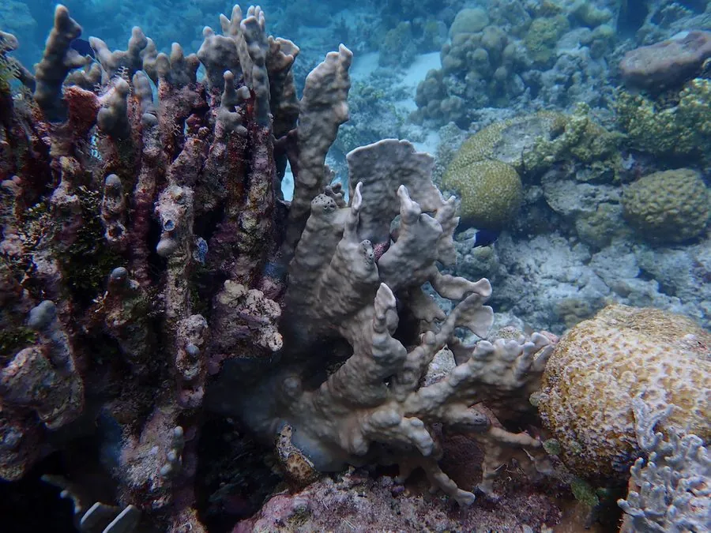

其他无脊椎动物 · 动物界
苍珊瑚 Heliopora coerulea

印度洋—太平洋珊瑚礁的八放珊瑚，骨骼呈独特的蓝色，是少数能形成礁体的八放珊瑚之一，被列为易危物种。
- 分类
- 门刺胞动物门纲珊瑚纲目苍珊瑚目科苍珊瑚科属苍珊瑚属
- 栖息环境
- 热带珊瑚礁的礁坪和浅水礁坡，水深 0–40 米
- 地理分布
- 印度洋—太平洋热带海域，从东非到太平洋岛屿
- 保护级别
- IUCN 易危（VU）；CITES 附录Ⅱ
物种志
苍珊瑚的骨骼呈独特的蓝色或蓝紫色，是它最显著的特征，也是少数能形成礁体的八放珊瑚之一。群体多呈团块状或板状，表面覆盖着褐绿色或灰绿色的珊瑚虫，触手为八条羽状触手，骨骼中的铁盐赋予了蓝色。
它分布于印度洋—太平洋的珊瑚礁，常见于礁坪和浅水礁坡，水深 0–40 米，生长缓慢，与虫黄藻共生。苍珊瑚的蓝色骨骼在死后仍能长期保存，常被冲上海滩或被采作工艺品。由于生长慢、对白化和沉积物敏感，加上采集压力，它被列为易危物种，并列入 CITES 附录Ⅱ。保护苍珊瑚需要减少破坏性渔业、控制沿岸污染，并限制工艺品贸易。
形态与习性
- 形态团块状或板状群体，骨骼呈蓝色
- 骨骼含铁盐而呈蓝色，死后仍能长期保存
- 触手八条羽状触手，属八放珊瑚
- 共生与虫黄藻共生
- 水深常见于 0–40 m 的礁坪和浅水礁坡
- 保护IUCN 易危，CITES 附录Ⅱ
趣味知识
- 苍珊瑚是少数骨骼呈蓝色的珊瑚，颜色来自骨骼中的铁盐。
- 它属于八放珊瑚，却能像石珊瑚一样参与建造礁体。
- 苍珊瑚生长缓慢，一旦被采挖需要很长时间才能恢复。